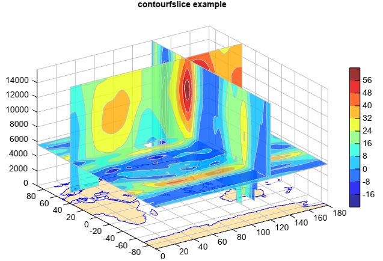

contourfslice¶
- Axes3DGL.contourfslice(*args, **kwargs):
Volume slice contour polygons
- Parameters
x – (array_like) Optional. X coordinate array.
y – (array_like) Optional. Y coordinate array.
z – (array_like) Optional. Z coordinate array.
data – (array_like) 3D data array.
xslice – (list) X slice locations.
yslice – (list) Y slice locations.
zslice – (list) Z slice locations.
cmap – (string) Color map string.
smooth – (bool) Smooth contour lines or not.
- Returns
Contour polygon slice graphics
Example of
contourfslicefn = os.path.join(migl.get_sample_folder(), 'GrADS', 'model.ctl') f = addfile(fn) data = f['U'][0,:,:,'0:180'] pres = data.dimvalue(0) z = meteolib.pressure_to_height_std(pres) y = data.dimvalue(1) x = data.dimvalue(2) #Plot ax = axes3d() geoshow('continent', facecolor=[255,231,177], edgecolor='b') levs = arange(-16, 57, 8) contourfslice(x, y, z, data, levs, edgecolor='lightgray', alpha=0.8, xslice=[120], yslice=[40], zslice=[z[3]]) colorbar() xlim(0, 180) title('contourfslice example')
Vertical cross section contour fill slice with start and end x/y points
fn = os.path.join(migl.get_sample_folder(), 'GrADS', 'model.ctl') f = addfile(fn) data = f['U'][0,:,:,'0:180'] pres = data.dimvalue(0) z = meteolib.pressure_to_height_std(pres) y = data.dimvalue(1) x = data.dimvalue(2) #Plot ax = axes3d() geoshow('continent', facecolor=[255,231,177], edgecolor='b') levs = arange(-16, 57, 8) contourfslice(x, y, z, data, levs, edgecolor='lightgray', alpha=0.8, xyslice=[20,-40,160,40]) colorbar(aspect=30) xlim(0, 180) title('contourfslice example')